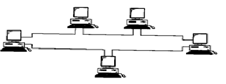

BASIC TOPOLOGIES SUCH AS BUS, RING, STAR, AND HYBRID :-
BUS TOPOLOGY :-
In BUS topology all stations (Computers, Repeaters, and Bridges etc) are connected to the transmission medium. One large cable acts as a backbone to link all the devices in network. Nodes are connected to the bus cable by drop lines and taps.
The interface between the station and the medium is through passive medium interface. This means signal becomes weaker and weaker as it goes through the bus.
In BUS topology the connection is multipoint
BUS topology allows unicast, multicast and broadcast addressing
BUS topology support Baseband and Broadband Transmission
In a baseband bus topology transmission is bi-directional
Removing the frame from the BUS:-
Terminators at both end of the BUS do Removal of frame
Transmission Medium:-
BUS topology uses coaxial cable.
ADVANTAGES:-
BUS toplogy includes ease of installation
BUS uses less cabiling than mesh, star (or) tree topology.
DISADVANTAGES:-
Difficult reconfiguration and fault isolation
SOME CHARACTERISTICS OF BUS TOPOLOGY:-
The failure of the medium seriously affects the network.
Because the interfaces are passive, there malfunctioning does not seriously affect the performance of the network.
Because the interfaces are passive, there is a limit on the length of the network unless repeators are used.
The propagation delay is independent of the number of stations on the network.
APPLICATIONS:-
10 Base 5, 10 Base 2, Token Bus (physically topology is Bus, While Logically topology is a ring), DQDB(Distributed Queue Dual Bus).
RING TOPOLOGY:-

In Ring topology each device has a dedicated point-to-point configuration only with the two devices on either side of it. A signal is passed along the ring from device to device until it reaches its destination. Each device in the ring incorporates a repeater.
ADDRESSING:
Ring topology allows unicast, multicast, and broadcast addressing.
MEDIUM IN INTERFACE:
In Ring topology medium interfaces are active devices, which means that they repeat (regenerate) the signal they receive.
POINT-TO-POINT CONNECTION:
In a ring topology, the connection between any two medium interfaces is point-to-point.
In a ring topology, transmission is unidirectional.
In a ring topology, transmission is baseband (digital).
TRANSMISSION MEDIUM:
A ring topology usually uses guided medium such as twisted pair cable, coaxial cable (or) Fiber optic cable.
REMOVING THE FRAME FROM THE RING:
Frame removal can be done by the destination interface (or) by the source interface.
ADVANTAGES:
A ring is relatively easy to install and reconfigure.
Fault isolation is simplified.
DISADVANTAGES:
Unidirectional traffic can be a disadvantage.
In a simple ring, a break in the ring can disable the entire network.
SOME CHARACTERISTICS OF RING TOPOLOGY:
The failure of the medium seriously affects the network.
Because the interfaces are active devices, their malfunctioning seriously affects the performance of the network.
Because the interfaces are active, there is no limitation on the length of the network.
Because each interface creates a delay, the total propagation delay is dependent on the number of stations on the network.
APPLICATIONS:
Token Ring, FDDI
STAR TOPOLOGY:
In a star topology, each station is connected to a central hub. The medium interface can be included in the network interface card and can be part of the station itself. In star topology, the connection between any station and the hub is a point-to-point connection.
In a star topology transmission is usually unidirectional.
In a Star topology, transmission can be either baseband (or) Broadband.
Passive (or) Active Hub:
A hub in a star topology can be either passive (or) Active.
HUB (OR) SWITCH:
By using Hub the topology is physically a star, but logically a bus. With the use of a switch, only the intended recipient receives a frame sent by a station.
Removing the frame from the network:
When a station receives a frame, it is automatically removed from the station.
Addressing:
If the star topology uses a switch, the switch makes the decision.
If the address is a unicast, the switch sends the frame to only the intended recipient.
If the address is a multicast, then the frame is send out to several output links.
If the address is a broadcast, the frame is sent out to all output links.
Advantages:
Easy to install and reconfigure.
Robustness, if one link fails only that link is affected.
Easy fault identification and fault isolation.
Disadvantages:
More cabling is required in a star than in some other topologies (ring, Bus).
Applications:
10BaseT, Fast Ethernet, Gigabit Ethernet, Wireless LAN
COMPLEX TOPOLOGIES:
The complex topologies are those topologies that use one or more basic topologies in a network.
1.Mesh topology
2. Hybrid topology
1.MESH TOPOLOGY:
Separate cables are used to connect individual devices on the network. The mesh topology is of two types:
a)Full-mesh
b) Partial-mesh
a) FULL-MESH:
Each device is interconnected with all the devices on the network, by a dedicated cable.
The term dedicated means that the link carries traffic only between the two devices it connects.
If one device fails, the data travelling along the network can be routed through another device attached to the active device.
The number of physical links in a full mesh network with n nodes is n(n-1)/2.
b) PARTIAL-MESH:
Only few devices on the network are interconnected while others are not at all connected.
Advantages:
1. Avoids traffic problems (each connection carries its own load)
2. It is robust, that is, if one link fails, it does not affect the entire system.
3. Privacy or security is provided.
Disadvantages:
1. As every device must be connected to every other device, more cabling is required.
2. Hardware required to connect each link is expensive.
2. HYBRID TOPOLOGY:
It is a combination of bus, star and ring networks.
In other words, this topology combines multiple topologies to form a large topology.
The hybrid topology is widely implemented in WAN.
However, the connection between the two networks is established using the bus topology.
In a star bus topology, the star topology of each network is linked to the bus topology.
If any one of the computer fails on the star topology, it will not affect the entire network.
However, if the central hub the star topology fails, then the entire network goes down because the cables are connected directly to the central hub of the star network.
As a result, computers on the network are not able to communicate with each other.